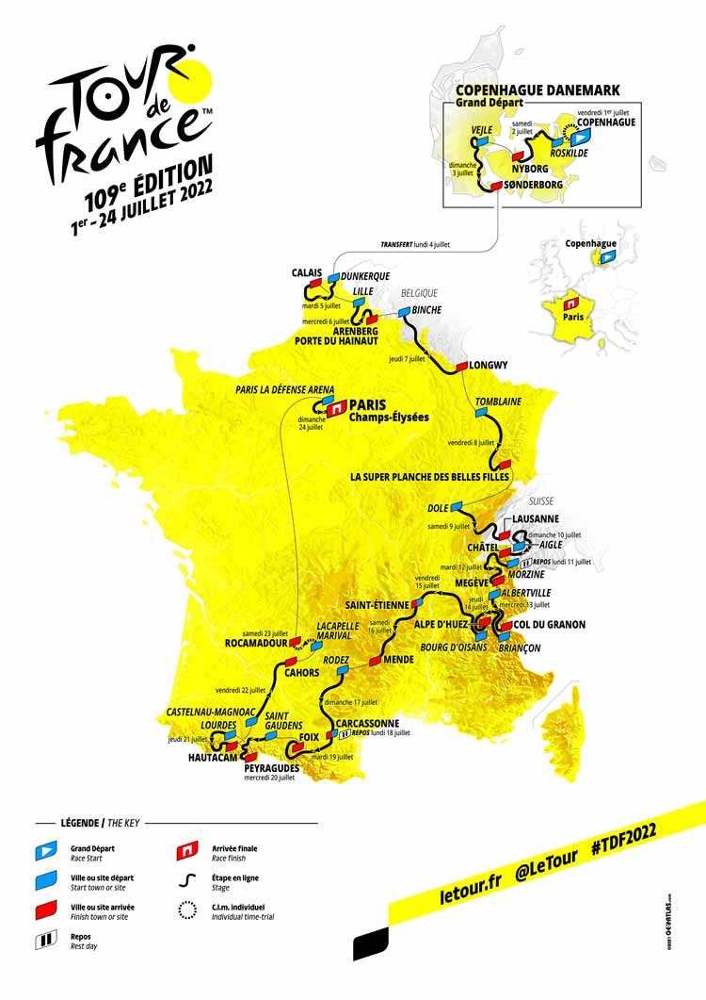

Route

The 2022 Tour de France Map
Map
Four countries: Denmark, Belgium, Switzerland and of course France will appear on the Tour map in 2022, the highest number since 2017. Denmark will become the 10th country to host the Grand Départ, and the most northerly in the Tour’s history. In France, the race will visit 8 regions and 29 departments.
Stages
There will be 21 stages:
- 6 flat stages;
- 7 hilly stages;
- 6 mountain stages with 5 summit finishes;
- 2 individual time trial stages;
- 2 rest days;
- 1 transfer day.
Calendar
The 2022 Tour will start on 1st July, on a Friday and not on a Saturday as usual. This is to allow for the transfer to France following the three Grand Départ stages in Denmark.